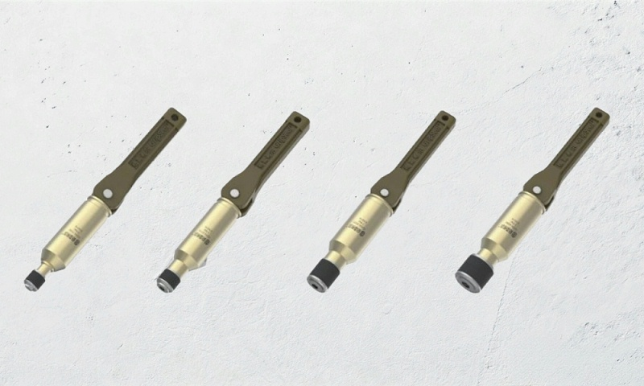
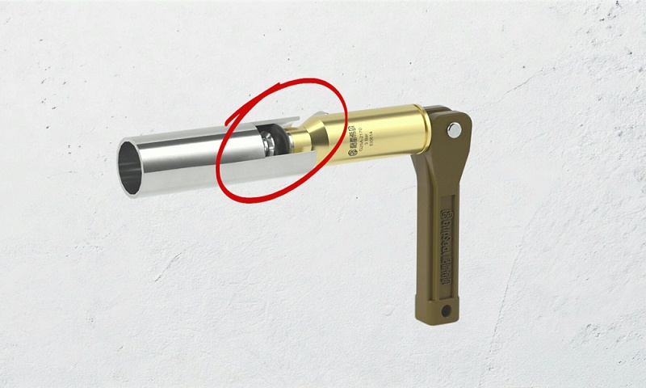
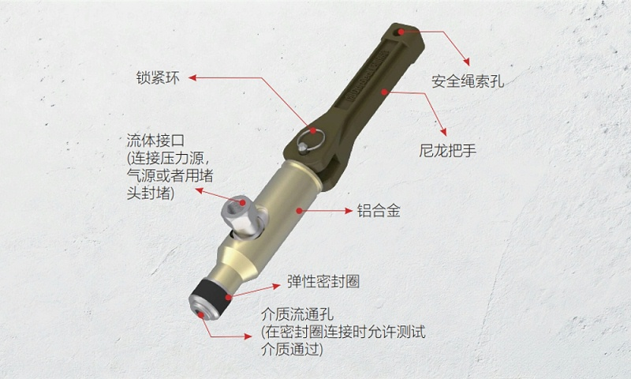

两个必须解决的物理连接
Background
新能源汽车电控箱（PEU，功率电子单元或逆变器总成）承担直流/交流变换、电压转换、电机驱动及能量回馈等功能，内部高度集成 IGBT 或 SiC MOSFET、控制电路板以及一体式冷却水道。紧凑结构决定了下线检测环节存在两个连接问题：对冷却水道做气密性验证，以及在通电加载时引入循环冷却液带走废热。
冷却水道气密性测试
Leak Test
电控箱壳体装配完成后，冷却水道必须经过气密性检漏以验证焊接或密封胶圈是否可靠。常见方式是一端封堵、另一端通入压缩空气或氮气，保压后通过压降或流量值判断泄漏量；该测试压力通常设定在 100～200 kPa 范围，属于低压气密范畴。
充气端：接头侧面的 G1/8 螺纹口连接气源管路及压力传感器，密封圈插入水道孔内，扳动把手约 90°，密封圈被轴向压缩并向径向外胀贴紧孔壁形成密封，随后即可充气。封堵端：使用相同规格接头但不接通气源，仅作为快速堵头封住另一端孔口，保压结束后拆除。
电控箱水道孔通常为铸造面、内径存在一定公差，接头内部弹簧可根据实际孔径自动调整密封圈胀紧量，无需人工调节，有效避免因孔径波动导致的密封失效或泄漏误判。
通电加载测试与现场注意
Cooling Test电控箱在通电加载时，IGBT 或 SiC 模块会产生大量热损耗，需向冷却水道通入循环冷却水（通常为乙二醇水溶液）以模拟整车液冷系统工作状态。同一款接头可切换为冷却水快速连接：插入孔内、扳动把手、通水；测试完成后先关闭水阀并泄压，再将把手折回原位即可断开。在常规冷却液工况下无需更换密封圈材质，便于现场备件管理与工位灵活切换。
工位布置需留意：该接头不具轴向锁紧力，通水时建议对后方管路做固定处理，避免外力拉扯导致脱出；同时应根据使用频次定期检查密封圈磨损状况并提前更换，避免因磨损造成泄漏误判。
产品特点
Features
接头定位为内胀式快速连接器：仅提供密封功能、无抓紧特征，依靠密封圈径向胀紧建立密封，因此孔口端面不平整或有轻微毛刺也不影响密封效果；手柄驱动约 90°，无需螺纹旋拧或辅助工具；主体为航空铝材，在保证强度的同时减轻长时间持握的疲劳；密封圈可单独更换，日常维护无需报废整个接头。